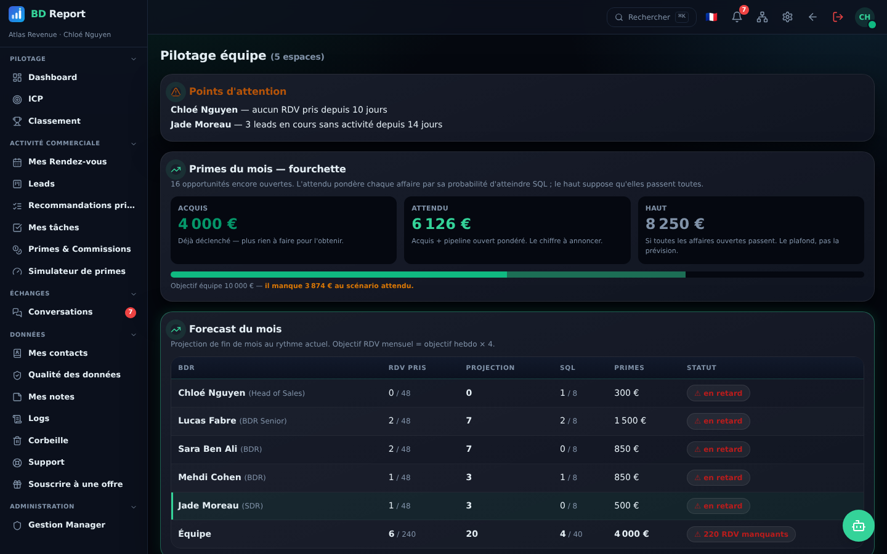

Tout est cliquable
Un chiffre vous intrigue ? Cliquez : la liste des rendez-vous derrière apparaît, filtrée sur la période affichée.
Des objectifs qui vivent
Quotas hebdo et mensuels avec barres de progression et alerte de retard — vous savez chaque matin où vous en êtes.
Le rapport prêt à présenter
Hebdo, mensuel, trimestriel ou annuel : vos 6 indicateurs clés avec variation vs période précédente, exportables en PDF.


Tout ce que cette brique inclut
- Dashboards complets avec timelines et drill-down
- Objectifs & quotas à barres de progression
- Rapports périodiques exportables en PDF
- Vélocité du pipeline et goulots identifiés
- Simulateur de primes : « combien vais-je toucher ? »
- Mode présentation plein écran
- Classement d'équipe & badges (gamification)
- Qualité des données : score /100 & doublons